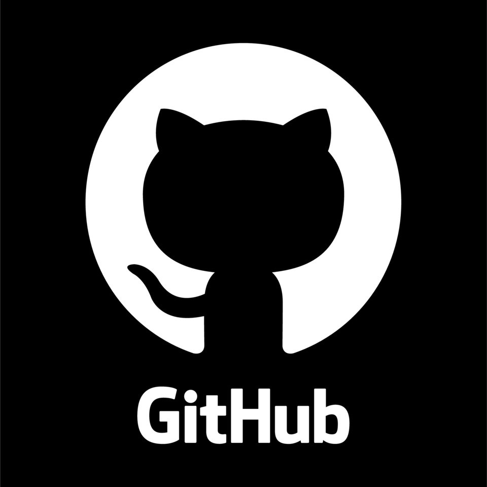
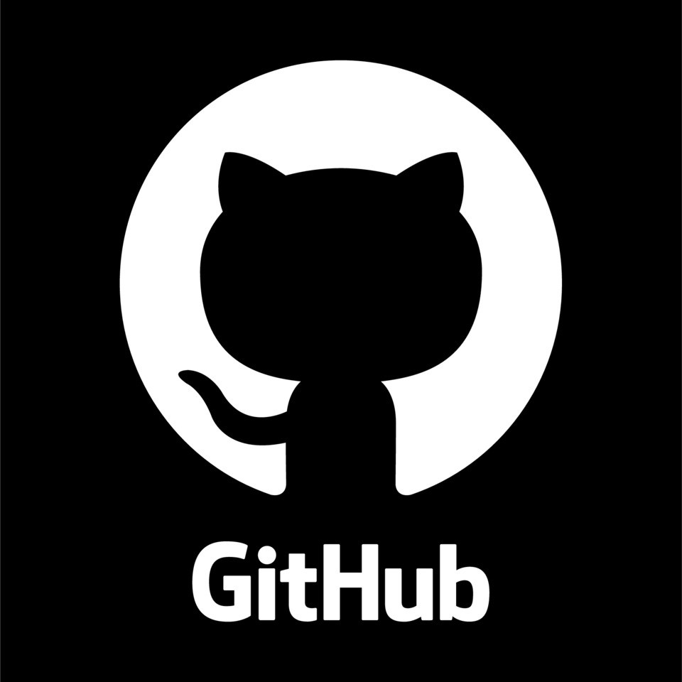

I’m a passionate Software Engineer dedicated to building innovative solutions that make life and business more efficient and sustainable. With a multidisciplinary background in engineering and a lifelong fascination with technology, I bring a unique perspective to solving complex challenges, blending logic, creativity, and a commitment to excellence.
I design scalable applications, automation tools, and data-driven solutions that help people and organizations work smarter. Curiosity and adaptability are key traits that drive my approach, as I welcome new challenges and constantly seek better ways to create value.
Driven by the belief that technology is a powerful force for positive change, I’m motivated to craft solutions that improve lives, foster progress, and create a more sustainable future. My approach is fueled by a deep appreciation for learning and a dedication to delivering meaningful, impactful results.
Let’s create something extraordinary together!
This project demonstrates that even seemingly simple applications can have complex and valuable implementations in a production environment. It features solid testing and an automated workflow for linting and testing using GitHub Actions.
I wrote a step-by-step guide on creating two virtual machines in Azure, connecting them using a virtual network, accessing them through Bastion, and testing the connection.